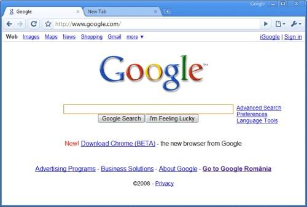

Google Chrome es un navegador web del tipo software gratuito propietario que fue desarrollado por Google y apareció por primera vez para Windows en el año 2008. En la actualidad, cuenta con más de 900 millones de usuarios siendo así el navegador web más utilizado en todo el mundo. La versión Chrome que apareció el 15 de septiembre de 2008 vino de la mano de la compañía desarrolladora CodeWeavers; sin embargo se trataba de una versión no oficial derivada de Wine y de Developer Build 21 para Linux y Mac OS X. No es hasta febrero de 2012 que Google lanza Chrome para Android Beta que el navegador comienza a ser reconocido como tal. Se podía descargar Chrome en teléfonos inteligentes y tabletas con la posibilidad de abrir varias pestañas a la vez y sincronizarlas junto con marcadores con la versión de escritorio, modo incógnito y ver el historial de uso. En junio de 2012, Google actualiza el navegador y lo vuelve una versión estable para Android.
